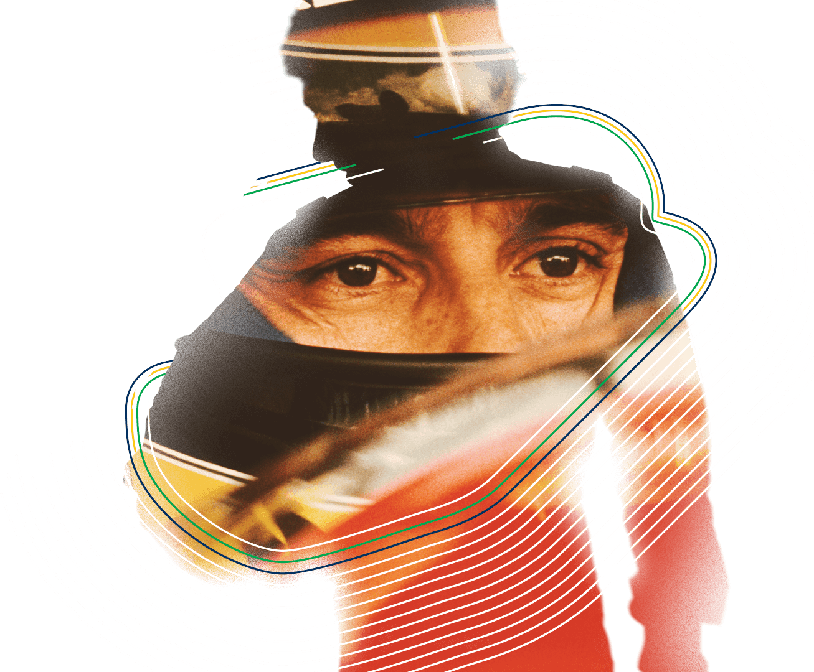

1960-1994
"Se você quer ser bem sucedido, precisa ter dedicação total, buscar seu último limite e dar o melhor de si."
Ayrton Senna (1960-1994) foi um piloto brasileiro de Fórmula 1. Ídolo do automobilismo conquistou três vezes o campeonato mundial, em 1988, 1990 e 1991. Morreu no auge da carreira, pilotando no circuito de Ímola, na Itália. Ayrton Senna da Silva nasceu em São Paulo, no dia 21 de março de 1960. Filho de empresário do ramo metalúrgico, com quatro anos de idade ganhou seu primeiro kart. Com sete anos começou a treinar no kartódromo de Interlagos, em São Paulo.